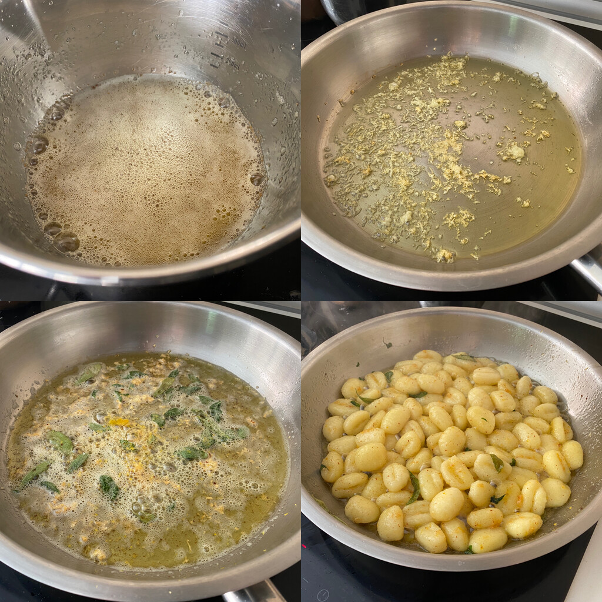

Preparamos todos los ingredientes para que, una vez arranquemos a cocinar, no tengamos que parar para nada. Pelamos y rallamos los dientes de ajo. Lavamos el limón, lo secamos y lo rallamos finamente. Lavamos y secamos las hojas de salvia. Ponemos una olla grande con agua y sal a calentar.
 Cortamos la mantequilla y la introducimos en un cacito. Cocemos a fuego medio durante unos cinco minutos o hasta que esté tostada. Mientras tanto calentamos el aceite en una sartén y pochamos el ajo rallado. En cuanto se empiece a dorar agregamos las hojas de salvia, la ralladura de limón y la mantequilla tostada.Cocemos los ñoquis o gnocchi durante el tiempo que indique el paquete. Suele ser un par de minutos o hasta que suban a la superficie. Los trasladamos, bien escurridos, a la sartén con la salsa y meneamos para que se impregnen bien. Servimos inmediatamente con queso parmesano (también puedes usar un manchego curado o grana padano) para espolvorear.
Con estas cantidades tenemos cuatro raciones generosas y saciantes (los ñoqui llenan bastante). Con una sencilla ensalada de hojas verdes o tomates de primero tendremos un menú más completo. Si hacemos raciones más pequeñas podemos tomar los ñoquis de primero y continuar, por ejemplo, con unos escalopes al limón o emperador a la siciliana.